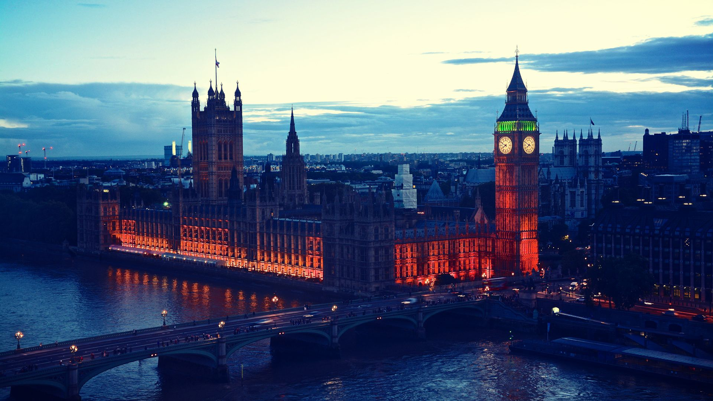

The following images of countries are the cover images for the information
related to their capitals. Click on country names to view information.
NEW DELHI New Delhi is the capital of India and an administrative district
of NCT Delhi. New Delhi is also the seat of all three branches of
the Government of India, that is Executive (Rashtrapati Bhavan), Legislature (Parliament House)
and Judiciary (Supreme Court of India). It was designed by British architects Sir Edwin Lutyens and Sir Herbert Baker. The new capital was inaugurated on 13 February 1931,
by Viceroy and Governor-General of India Lord Irwin.
Although colloquially Delhi and New Delhi are used interchangeably to refer to the National Capital Territory of Delhi (NCT),
these are two distinct entities, with New Delhi forming a small part of the city of Delhi. The National Capital Region is a much larger
entity comprising the entire NCT along with adjoining districts in neighbouring states.
TOKYO
Tokyo, officially Tokyo Metropolis , is the capital[7] and most populous prefecture of Japan. Located at the head of Tokyo Bay, the prefecture forms part of the Kantō region on the central Pacific coast of Japan's main island, Honshu. Tokyo is the political and economic center of the country, as well as the seat of the Emperor of Japan and the national government. In 2019, the prefecture had an estimated population of 13,929,280.[4] The Greater Tokyo Area is the most populous metropolitan area in the world, with more than 37.393 million residents as of 2020.

LONDON
London is the capital and largest city of England and the United Kingdom. The city stands on the
River Thames in the south-east of England, at the head of its 50-mile (80 km) estuary leading to the North Sea.
London has been a major settlement for two millennia.London is one of the world's most important global cities and
has been called the world's most powerful, most desirable, most influential, most visited, most expensive, sustainable, most investment-friendly,
and most-popular-for-work city. It exerts a considerable impact upon the arts, commerce, education, entertainment, fashion, finance, healthcare,
media, professional services, research and development, tourism and transportation.
BRASILIA
Brasília is the federal capital of Brazil and seat of government of the Federal District.
The city is located atop the Brazilian highlands in the country's center-western region.
It was founded by President Juscelino Kubitschek on April 21, 1960, to serve as the new national capital.
Brasília is estimated to be Brazil's third-most populous city. Among major Latin American cities, it has
the highest GDP per capita. All three branches of Brazil's federal government are centered in the city: executive, legislative and judiciary. Brasília also hosts 124 foreign embassies.
The city's international airport connects it to all other major Brazilian cities and some international destinations, and it is the third-busiest airport in Brazil.
WASHINGTON D.C.
Washington, D.C., formally the District of Columbia and also known as D.C. or Washington, is the capital city of the United States of America.[6] Founded after the American Revolution as the seat of government of the newly independent country, Washington was named after George Washington, the first president of the United States and a Founding Father.[7] As the seat of the United States federal government and several international organizations, Washington is an important world political capital.[8] Located on the Potomac River bordering Maryland and Virginia, the city is one of the most visited cities in the United States, with more than 20 million visitors annually.
 NEW DELHI
NEW DELHI